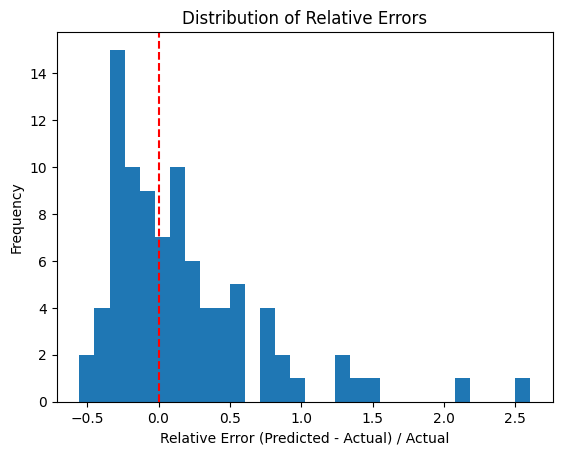
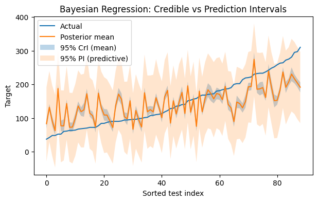
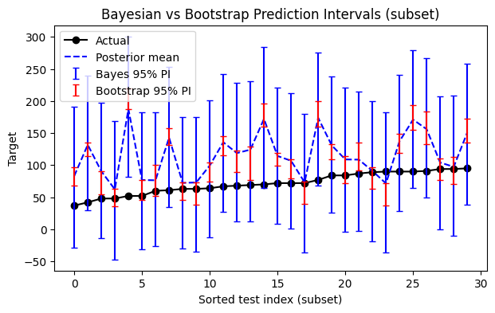

# Load Diabetes dataset and build OLS baseline
from sklearn.datasets import load_diabetes
from sklearn.model_selection import train_test_split
from sklearn.linear_model import LinearRegression
from sklearn.metrics import mean_squared_error, r2_score
import numpy as np
import pandas as pdBayesian Regression & Uncertainty
In this lesson we introduce Bayesian linear regression and uncertainty quantification. We use: - A closed-form Bayesian linear regression under conjugate priors (Normal prior on coefficients), - A practical bootstrap approximation to predictive uncertainty.
We compare intervals to OLS and discuss when each approach is appropriate.
Learning objectives - Derive and implement a closed-form Bayesian linear regression in NumPy. - Compute credible and predictive intervals via posterior sampling. - Use bootstrap resampling to approximate predictive uncertainty. - Compare OLS CIs vs Bayesian CrIs; understand their interpretations.
Bayesian Linear Regression
Assume the standard linear model \[ \mathbf{y} \mid X, \boldsymbol{\beta}, \sigma^2 \sim \mathcal{N}(X\boldsymbol{\beta}, \ \sigma^2 I_n), \] with a Gaussian prior on coefficients (ridge-like prior) \[ \boldsymbol{\beta} \sim \mathcal{N}\!\left(\mathbf{0}, \ \tau^2 I_p\right). \]
If we treat \(\sigma^2\) as known (or plug in an estimate), the posterior for \(\boldsymbol{\beta}\) is Gaussian: \[ \Sigma_{\text{post}} \;=\; \left(\frac{1}{\sigma^2}X^\top X \;+\; \frac{1}{\tau^2}I_p \right)^{-1}, \qquad \boldsymbol{\beta}_{\text{post}} \;=\; \Sigma_{\text{post}} \left(\frac{1}{\sigma^2}X^\top \mathbf{y}\right). \]
For a new sample \(x_*\), the posterior predictive distribution is approximately \[ y_* \mid x_*, \mathcal{D} \ \sim\ \mathcal{N}\!\Big(x_*^\top \boldsymbol{\beta}_{\text{post}},\ \underbrace{\sigma^2}_{\text{noise}} \;+\; \underbrace{x_*^\top \Sigma_{\text{post}} x_*}_{\text{parameter uncertainty}}\Big). \]
In practice, we will estimate \(\sigma^2\) from OLS residuals (empirical Bayes). This keeps the implementation simple and fast.
# Data
data = load_diabetes(as_frame=True)
df = data.frame.copy()
df.rename(columns={'target': 'disease_progression'}, inplace=True)
df| age | sex | bmi | bp | s1 | s2 | s3 | s4 | s5 | s6 | disease_progression | |
|---|---|---|---|---|---|---|---|---|---|---|---|
| 0 | 0.038076 | 0.050680 | 0.061696 | 0.021872 | -0.044223 | -0.034821 | -0.043401 | -0.002592 | 0.019907 | -0.017646 | 151.0 |
| 1 | -0.001882 | -0.044642 | -0.051474 | -0.026328 | -0.008449 | -0.019163 | 0.074412 | -0.039493 | -0.068332 | -0.092204 | 75.0 |
| 2 | 0.085299 | 0.050680 | 0.044451 | -0.005670 | -0.045599 | -0.034194 | -0.032356 | -0.002592 | 0.002861 | -0.025930 | 141.0 |
| 3 | -0.089063 | -0.044642 | -0.011595 | -0.036656 | 0.012191 | 0.024991 | -0.036038 | 0.034309 | 0.022688 | -0.009362 | 206.0 |
| 4 | 0.005383 | -0.044642 | -0.036385 | 0.021872 | 0.003935 | 0.015596 | 0.008142 | -0.002592 | -0.031988 | -0.046641 | 135.0 |
| ... | ... | ... | ... | ... | ... | ... | ... | ... | ... | ... | ... |
| 437 | 0.041708 | 0.050680 | 0.019662 | 0.059744 | -0.005697 | -0.002566 | -0.028674 | -0.002592 | 0.031193 | 0.007207 | 178.0 |
| 438 | -0.005515 | 0.050680 | -0.015906 | -0.067642 | 0.049341 | 0.079165 | -0.028674 | 0.034309 | -0.018114 | 0.044485 | 104.0 |
| 439 | 0.041708 | 0.050680 | -0.015906 | 0.017293 | -0.037344 | -0.013840 | -0.024993 | -0.011080 | -0.046883 | 0.015491 | 132.0 |
| 440 | -0.045472 | -0.044642 | 0.039062 | 0.001215 | 0.016318 | 0.015283 | -0.028674 | 0.026560 | 0.044529 | -0.025930 | 220.0 |
| 441 | -0.045472 | -0.044642 | -0.073030 | -0.081413 | 0.083740 | 0.027809 | 0.173816 | -0.039493 | -0.004222 | 0.003064 | 57.0 |
442 rows × 11 columns
X = df.drop(columns=['disease_progression']).values
y = df['disease_progression'].values
# Train/test split
X_train, X_test, y_train, y_test = train_test_split(X, y, test_size=0.2, random_state=42)Ordinary Least Squares Linear Regression
# Add intercept column
X_train_i = np.column_stack([np.ones(len(X_train)), X_train])
X_test_i = np.column_stack([np.ones(len(X_test)), X_test])
feature_names = ['intercept'] + list(df.drop(columns=['disease_progression']).columns)
# OLS baseline (for comparison)
ols = LinearRegression(fit_intercept=False) # intercept already in X_*_i
ols.fit(X_train_i, y_train)
y_pred_ols = ols.predict(X_test_i)
ols_rmse = np.sqrt(mean_squared_error(y_test, y_pred_ols))
ols_r2 = r2_score(y_test, y_pred_ols)
print(f"OLS Test RMSE: {ols_rmse:.3f}, R^2: {ols_r2:.3f}")OLS Test RMSE: 53.853, R^2: 0.453Estimated average noise in predictions of linear regression
# Estimate sigma^2 from OLS residuals (train set) for empirical Bayes
y_hat_train = ols.predict(X_train_i)
resid = y_train - y_hat_train
n, p = X_train_i.shape
sigma2_hat = (resid @ resid) / (n - p) # unbiased estimate if model is well-specified
print("Estimated sigma^2_hat (train OLS residual variance):", round(float(sigma2_hat), 3))Estimated sigma^2_hat (train OLS residual variance): 2960.813# Closed-form Bayesian linear regression (Normal prior on beta)
import numpy as np
# Hyperparameter: prior std tau (tuneable). Smaller -> stronger shrinkage.
tau = 100
I = np.eye(X_train_i.shape[1])
XtX = X_train_i.T @ X_train_i
Xty = X_train_i.T @ y_train
Sigma_post = np.linalg.inv((XtX / sigma2_hat) + (I / (tau**2)))
beta_post = Sigma_post @ (Xty / sigma2_hat)# Coefficients
beta_postarray([ 151.5748261 , 44.6760888 , -157.03826861, 430.76561109,
278.31508518, -49.83515387, -78.85649793, -186.4994001 ,
138.63049196, 328.27442616, 103.67433555])# Uncertainty (std) in coefficients
Sigma_post[:5, :5] # show top-left 5x5 blockarray([[ 8.40552432e+00, -3.36435602e+00, 5.60889493e-01,
-3.31728348e+00, -7.67202776e-01],
[-3.36435602e+00, 3.14644979e+03, -2.99012083e+02,
-7.59670516e+01, -4.42309282e+02],
[ 5.60889493e-01, -2.99012083e+02, 3.04200335e+03,
3.22472208e+02, -3.26905399e+02],
[-3.31728348e+00, -7.59670516e+01, 3.22472208e+02,
3.50525851e+03, -6.33608476e+02],
[-7.67202776e-01, -4.42309282e+02, -3.26905399e+02,
-6.33608476e+02, 3.19338604e+03]])# Predictive mean on test set
y_mean_post = X_test_i @ beta_post
# Predictive variance: sigma^2 + x^T Sigma_post x (diagonal, for each test point)
# param_var = np.sum(X_test_i @ Sigma_post * X_test_i, axis=1) # diag(X Sigma_post X^T)
# y_pred_var = sigma2_hat + param_varimport matplotlib.pyplot as plt
import numpy as np
errors = y_mean_post - y_test
rel_errors = errors / y_test
plt.hist(rel_errors, bins=30)
plt.axvline(0, color='red', linestyle='--')
plt.xlabel("Relative Error (Predicted - Actual) / Actual")
plt.ylabel("Frequency")
plt.title("Distribution of Relative Errors")
plt.show()
print("Mean relative error:", np.mean(rel_errors))
print("Median relative error:", np.median(rel_errors))
Mean relative error: 0.16753707623461853
Median relative error: 0.022010020708090185# Compute test metrics using posterior mean (point predictions)
from sklearn.metrics import mean_squared_error, r2_score
import numpy as np
rmse_bayes_mean = np.sqrt(mean_squared_error(y_test, y_mean_post))
r2_bayes_mean = r2_score(y_test, y_mean_post)
print(f"Posterior-mean Test RMSE: {rmse_bayes_mean:.3f}, R^2: {r2_bayes_mean:.3f}")Posterior-mean Test RMSE: 53.556, R^2: 0.459Credible & Predictive Intervals via Sampling
We draw \(S\) samples \(\boldsymbol{\beta}^{(s)} \sim \mathcal{N}(\boldsymbol{\beta}_{\text{post}}, \Sigma_{\text{post}})\) and compute predictive draws: \[ y_*^{(s)} = x_*^\top \boldsymbol{\beta}^{(s)} + \varepsilon^{(s)}, \quad \varepsilon^{(s)} \sim \mathcal{N}(0, \sigma^2). \] Taking percentiles across \(\{y_*^{(s)}\}\) yields prediction intervals; using percentiles of \(x_*^\top \boldsymbol{\beta}^{(s)}\) yields credible intervals for the mean prediction.
# Posterior sampling for intervals
import numpy as np
S = 2000 # number of posterior samples
beta_samples = np.random.multivariate_normal(mean=beta_post, cov=Sigma_post, size=S)
# Credible intervals for mean prediction (no noise term)
y_mean_samples = beta_samples @ X_test_i.T # shape (S, n_test)
# Prediction intervals (include observation noise)
eps = np.random.normal(loc=0.0, scale=np.sqrt(sigma2_hat), size=y_mean_samples.shape)
y_pred_samples = y_mean_samples + eps
# Summaries (pointwise 95% intervals)
def pct(a, q): return np.percentile(a, q, axis=0)
ci_lo, ci_hi = pct(y_mean_samples, 2.5), pct(y_mean_samples, 97.5)
pi_lo, pi_hi = pct(y_pred_samples, 2.5), pct(y_pred_samples, 97.5)
# Visualize uncertainty on a sorted index for readability
import matplotlib.pyplot as plt
import numpy as np
idx = np.argsort(y_test)
y_sorted = y_test[idx]
y_mean_sorted = y_mean_post[idx]
ci_lo_s, ci_hi_s = ci_lo[idx], ci_hi[idx]
pi_lo_s, pi_hi_s = pi_lo[idx], pi_hi[idx]
plt.figure(figsize=(7,4))
plt.plot(y_sorted, label="Actual")
plt.plot(y_mean_sorted, label="Posterior mean")
plt.fill_between(range(len(y_sorted)), ci_lo_s, ci_hi_s, alpha=0.3, label="95% CrI (mean)")
plt.fill_between(range(len(y_sorted)), pi_lo_s, pi_hi_s, alpha=0.2, label="95% PI (predictive)")
plt.xlabel("Sorted test index")
plt.ylabel("Target")
plt.title("Bayesian Regression: Credible vs Prediction Intervals")
plt.legend()
plt.show()
Bootstrap Approximation (Frequentist but Practical)
The bootstrap resamples the training data to mimic sampling variability: 1. Draw \(B\) bootstrap datasets by sampling \(n\) rows with replacement. 2. Fit an OLS model on each bootstrap sample. 3. Predict on the test set; take percentiles across predictions for empirical prediction intervals.
This is not Bayesian, but it often gives similar intuition about uncertainty without extra libraries.
# Bootstrap predictive intervals
from sklearn.utils import resample
from sklearn.linear_model import LinearRegression
import numpy as np
B = 200 # number of bootstrap replicates (increase if time allows)
preds = []
for b in range(B):
Xb, yb = resample(X_train_i, y_train, replace=True, random_state=1234 + b)
m = LinearRegression(fit_intercept=False)
m.fit(Xb, yb)
preds.append(m.predict(X_test_i))
preds = np.array(preds) # shape (B, n_test)
def pct(a, q): return np.percentile(a, q, axis=0)
boot_lo, boot_hi = pct(preds, 2.5), pct(preds, 97.5)
# Compare Bayesian PI vs Bootstrap intervals on a few points
import matplotlib.pyplot as plt
import numpy as np
k = min(30, len(y_test)) # plot first k sorted points for clarity
idx = np.argsort(y_test)[:k]
y_c = y_mean_post[idx]
# Bayes PI errors (ensure non-negative magnitudes)
bayes_lower = np.clip(y_c - pi_lo[idx], 0, None)
bayes_upper = np.clip(pi_hi[idx] - y_c, 0, None)
bayes_yerr = np.vstack([bayes_lower, bayes_upper])
# Bootstrap PI errors (ensure non-negative magnitudes)
boot_lower = np.clip(y_c - boot_lo[idx], 0, None)
boot_upper = np.clip(boot_hi[idx] - y_c, 0, None)
boot_yerr = np.vstack([boot_lower, boot_upper])
plt.figure(figsize=(7,4))
plt.plot(range(k), y_test[idx], 'k', label="Actual", marker='o')
plt.plot(range(k), y_c, 'b', label="Posterior mean", linestyle='--')
plt.errorbar(range(k), y_c, yerr=bayes_yerr, fmt='none', capsize=3, ecolor='blue', label="Bayes 95% PI")
plt.errorbar(range(k), y_c, yerr=boot_yerr, fmt='none', capsize=3, ecolor='red', label="Bootstrap 95% PI")
plt.xlabel("Sorted test index (subset)")
plt.ylabel("Target")
plt.title("Bayesian vs Bootstrap Prediction Intervals (subset)")
plt.legend()
plt.show()
Confidence vs Credible Intervals (Recap)
- Confidence interval (CI): frequency-based coverage under repeated sampling. It does not say “the parameter has 95% probability” in the interval.
- Credible interval (CrI): posterior probability statement given data and priors. With a Gaussian prior and large \(n\), CrIs often resemble CIs.
Prediction intervals include observation noise, hence are wider than intervals for the mean prediction.
Exercises
- Prior sensitivity: Change \(\tau\) (e.g., 0.3, 1.0, 3.0). How do the credible and predictive intervals change? Report test \(R^2\).
- Empirical Bayes for \(\tau\): Choose \(\tau\) by 5‑fold CV, maximizing validation \(R^2\) (hint: mimic Ridge search).
- Bootstrap size: Increase \(B\) to 1000. Do coverage and interval width stabilize?